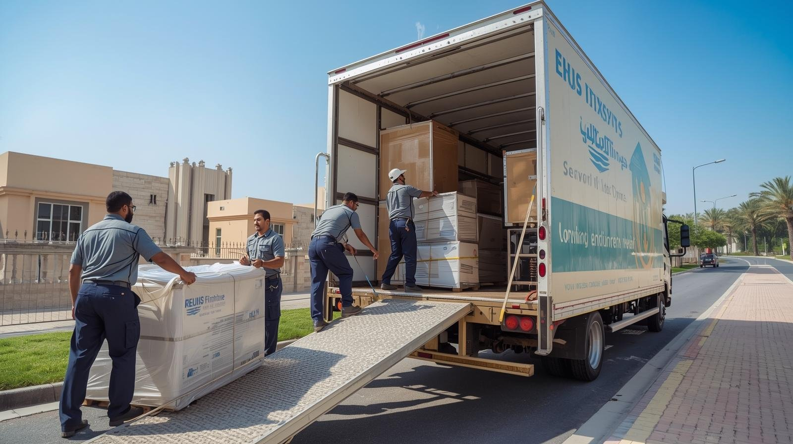

افضل شركة نقل اثاث بخميس مشيط | 0541145506

إن اختيار افضل شركة نقل اثاث بخميس مشيط هو حلًا مثاليًا لكل من يرغب في نقل العفش بأمان واحترافية عالية، في هذا المجال تبرز شركة نقل الرياض كافضل شركة نقل اثاث بخميس مشيط وذلك بفضل خبرتها الكبيرة في المجال وجودة الخدمات التي تقدمها، فهي لا تقتصر فقط على نقل العفش، بل تقدم حلولًا متكاملة تشمل التغليف باستخدام أنواع خامات عالية الجودة، الفك والتركيب بأستخدام فنيين مدربين، بالإضافة إلى أنها تمتلك أسطول من السيارات المجهزة بأحدث الوسائل لحماية العفش من الصدمات، كما تلتزم الشركة بالمواعيد وتوفر أسعارًا تنافسية مقارنة بجودة خدماتها وتناسب جميع الفئات، مما يجعلها الخيار الأمثل لكل من يبحث عن افضل شركة نقل عفش واثاث بخميس مشيط، لا تتردد وتواصل الآن مع شركة نقل الرياض للحصول على أفضل خدمات لنقل العفش بأمان واحترافية.
خطوات نقل الاثاث مع افضل شركة نقل عفش واثاث بخميس مشيط
تتبع شركة نقل الرياض افضل شركة نقل اثاث بخميس مشيط خطوات دقيقة تضمن لك تجربة مريحة وآمنة، إليك أهم هذه الخطوات:
- تبدأ عملية نقل العفش بتواصلك مع الشركة لتحديد الموعد المناسب للعملية.
- ترسل الشركة فريق للمعاينة الأثاث المراد نقله، وتحديد عدد العمالة المطلوبة، حجم السيارة المناسبة، أدوات التغليف.
- يتم بعد ذلك تغليف الاثاث بأجود أنواع الخامات مثل الكرتون المقوى، الفقاعات الهوائية، الأشرطة اللاصقة لحماية الأثاث من الصدمات والخدوش.
- يقوم فريق الشركة بفك الأثاث الكبير مثل المطابخ وغرف النوم، ثم نقلة بعناية إلى سيارة النقل المجهزة بأحدث التقنيات لحماية الجهاز.
- يتم النقل إلى الموقع الجديد، بعد الوصول يقوم الفريق بتركيب الأثاث وترتيبه في المكان الجديد تلبية طلبات العميل.
مميزات افضل شركة نقل اثاث بخميس مشيط لضمان تجربة مريحة
حدى أهم مميزات اختيار افضل شركة نقل اثاث بخميس مشيط هي ضمانك التعامل مع جهة موثوقة تمتلك خبرة طويلة في هذا المجال، وهذا ما توفره لك شركة نقل الرياض التي أثبتت مكانتها كخيار أول للعملاء بفضل خدماتها المتكاملة: إليك أبرز مميزات الشركة:
- خبرة طويلة في مجال نقل الأثاث تجعل شركة نقل الرياض الخيار الأول للعملاء الباحثين عن الجودة.
- فنيين مدربين على أعلى مستوى للتعامل مع جميع أنواع الأثاث بعناية ودقة عالية.
- تغليف احترافي باستخدام أجود أنواع التغليف لحماية العفش من الخدوش أو التلف.
- أسطول سيارات مجهز بأحدث التقنيات يضمن النقل الآمن داخل خميس مشيط أو إلى أي مدينة أخرى.
- تلتزم الشركة بالمواعيد لتسهيل تجربة العميل وتجنب التأخير.
- أسعار تنافسية وشفافة تناسب جميع الفئات مع عروض مميزة.
- خدمات شاملة تشمل الفك، التركيب، والتخزين المؤقت إذا لزم الأمر.
- موثوقية عالية تجعل شركة نقل الرياض الشريك المثالي لكل من يبحث عن راحة البال أثناء نقل الأثاث.
كيف تختار شركة نقل عفش واثاث بخميس مشيط موثوقة؟
إذا كنت تفكر في اختيار افضل شركة نقل عفش اثاث بخميس مشيط،فإن هناك عدة معايير تساعدك في الاختيار وتضمن لك تجربة آمنة وسهلة، أولًا: يُنصح بالبحث عن سمعة الشركة من خلال تقييمات وآراء العملاء السابقين، فذلك يعكس مستوى الثقة والخبرة. كما أن توافر فريق عمل مدرب على فك، تغليف، ونقل الأثاث يعد من أهم عوامل النجاح، إلى جانب استخدام مواد تغليف عالية الجودة لحماية العفش من أي خدوش أو تلف.
كذلك، من الضروري أن تمتلك الشركة أسطول سيارات مجهز ومؤمن لنقل الأثاث بأمان، مع الالتزام بالمواعيد المحددة دون تأخير،ولا يقل عن ذلك أهمية وضوح الأسعار، بحيث تقدم الشركة عرضًا مكتوبًا يتضمن كافة التكاليف دون أي رسوم خفية، إضافة إلى ذلك، يُفضل التعامل مع شركة توفر خدمة التأمين على الأثاث وخدمات إضافية مثل التخزين المؤقت أو إعادة ترتيب الأثاث في المكان الجديد. كل هذه العناصر تجعل اختيارك للشركة أكثر أمانًا وتمنحك راحة البال طوال عملية النقل.
ومن أفضل الشركات التي تمتلك هذه المميزات هي شركة نقل الرياض افضل شركة نقل اثاث بالرياض، لذلك تُصنف الشركة كافضل شركة نقل اثاث بخميس مشيط، لا تتردد وتواصل الآن مع الشركة واحصل على أفضل خدمة نقل في الرياض.
اسعار وخدمات افضل شركات نقل اثاث بخميس مشيط
تختلف اسعار شركات النقل باختلاف الخدمات المقدمة، حج الأثاث وعدد القطع المراد نقلها، المسافة بين الموقعين، بالإضافة إلى هل تشمل الخدمة نقل فقط أم نقل وتغليف وفك وتركيب، أو استخدام الونش لرفع الأثاث، لذلك يجب عليك أولًا تحديد ما تحتاج ليُحدد لك السعر، شركة نقل الرياض توفر باقات متنوعة تناسب احتياجات جميع العملاء، تبدأ من نقل الأثاث البسيط داخل المدينة بأسعار منخفضة، وصولًا إلى نقل الفلل والشقق الكبيرة أو النقل بين المدن بأسعار أعلى ولكنها غير مبالغ فيها مقارنة بالشركات الأخرى، وتشمل خدمات شركة نقل الرياض الخدمات الأساسية مثل التغليف بأجود أنواع الخامات، النقل بسيارات مجهزة، توفير فنيين مدربين على أعلى مستوى على فك وتركيب الاثاث باحترافية، بالإضافة إلى إمكانية التخزين المؤقت.
كيفية طلب خدمة من شركة نقل عفش واثاث بخميس مشيط بسهولة
للتواصل السهل والسريع من افضل شركة نقل اثاث بخميس مشيط “شركة نقل الرياض” فإن الأمر لا يحتاج سوى خطوات بسيطة، حيث أنه في البداية يُمكنك التواصل المباشر مع الشركة عبر الهاتف المحمول على رقم 0541145506 لتحديد موعد المعاينة أو النقل المناسب لك، حيث يقوم فريق شركة نقل الرياض بالتواصل معك والرد على جميع استفساراتك، يُبلغك بالأسعار التي تناسب الخدمة التي تطلبهاوفقًا لحجم العفش والمسافة والخدمات المطلوبة مثل الفك والتركيب والتغليف، ثم بعد ذلك يتم الاتفاق على الموعد النهائي للنقل، وتبدأ الشركة بتنفيذ الخدمة بكل احترافية وسرعة وتوفر الشركة ايضاً دينا نقل عفش حي ظهرة لبن.
نصائح لضمان سلامة الاثاث مع افضل شركة نقل اثاث بخميس مشيط
لضمان سلامة أثاثك عند الانتقال مع افضل شركة نقل اثاث بخميس مشيط، من المهم اتباع بعض الخطوات التي تجعل تجربتك أكثر أمانًا وراحة، في البداية، احرص على اختيار شركة ذات سمعة جيدة وخبرة طويلة مثل شركة نقل الرياض، التي توفر عمالة مدربة وأدوات تغليف احترافية لحماية الأثاث من أي خدوش أو كسر، كذلك، يُفضل أن تتم معاينة الأثاث مسبقًا لتحديد طريقة النقل المثالية وحجم السيارة المناسب، لا تنسَ أهمية التغليف الجيد باستخدام الكرتون المقوى والمواد العازلة، إضافة إلى ترتيب العفش داخل السيارة بشكل محكم لتفادي أي حركة أثناء السير، ومع شركة نقل الرياض، يمكنك الاطمئنان أكثر بفضل خدماتها المتكاملة التي تشمل الفك والتركيب، التأمين على الأثاث، والالتزام بالمواعيد بدقة، مما يمنحك تجربة نقل آمنة ومريحة دون قلق، للتواصل اضغط هنا.
في الختام، يمكن القول إن اختيار افضل شركة نقل اثاث بخميس مشيط ليس مجرد خطوة عادية، بل هو قرار يضمن لك راحة البال وحماية ممتلكاتك خلال عملية النقل، ومع الخدمات المتكاملة التي تقدمها شركة نقل الرياض من تغليف احترافي، وفك وتركيب، وأسعار تنافسية، ستجد أنك أمام تجربة مريحة وآمنة تلبي جميع احتياجاتك. لذلك، إذا كنت تبحث عن الجودة والموثوقية في آن واحد، فإن شركة نقل الرياض هي خيارك الأمثل لنقل الأثاث داخل خميس مشيط أو إلى أي مدينة أخرى بكل سهولة وأمان، يُمكنك التواصل مع الشركة عبر الهاتف على رقم 0541145506.
الاسئلة الشائعة عن شركات نقل عفش واثاث بخميس مشيط
ما هي أفضل شركة لنقل العفش في السعودية؟
تُعتبر شركة نقل الرياض هي أفضل شركة نقل عفش في السعودية، وذلك بسبب جودة الخدمات التي تقدمها وفريقها المدرب على أعلى مستوى.
كم يكلف نقل الأثاث؟
يختلف سعر نقل الأثاث باختلاف الخدمات التي تحتاجها مثل التغليف، الفك، التركيب، النقل، المسافة بين الموقع القديم والجديد، عدد قطع الأثاث.
ما هي أفضل شركة لنقل العفش في الخفجي؟
شركة نقل الرياض من أفضل الشركات لنقل العفش في الخفجي، تقدم الشركة جميع الخدمات التي تحتاجها من نقل وتركيب وتغليف، كما أنها لديها خدمة التخزين المؤقت للعفش.